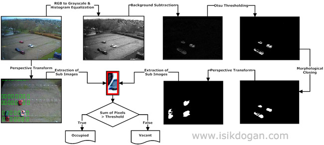

Kamera tabanlı araç park alanı izleme sistemi
July 14, 2011Stajımın ilk haftasında Java ve (JavaCV sarmalayıcısı ile) OpenCv kullanarak geliştirdiğim bir çeşit görü tabanlı izleme sistemi olan bu proje ile otopark alanına bakan bir kameradan alınan görüntüler işlenerek park alanında kaç araç bulunduğu, hangi alanların boş hangilerinin dolu olduğu gibi bilgiler kamera görüntüsü üzerinde görüntülenebiliyor.
Sistemin işleyişi oldukça basit, genel adımları aşağıdaki gibi özetleyebilirim:

- Kameradan alınan renkli RGB görüntülerin gri tonlamalı görüntülere dönüştürülmesi,
- Arkaplan ve kamera görüntülerinin histogram eşitleme yöntemi ile karşıtlıklarının iyileştirilmesi,
- Anlık görüntüden arkaplan çıkarımı,
- Otsu eşikleme yöntemi kullanılarak görüntünün binary hale getirilmesi,
- Biçimsel Kapatma (Morphological Closing) uygulanarak araç bloklarındaki boşlukların doldurulması,
- Perspektif dönüşümü uygulanarak park alanı görüntüsünün dikdörtgen haline getirilmesi,
- Park alanlarının dönüşüm uygulanmış görüntüden çıkarımı
- Her alan için integral görüntülerin (piksel toplamlarının) elde edilmesi
- Toplam değeri belirli bir seviyenin üstünde olan alanların dolu, altında olanların boş olarak işaretlenmesi,
- Araç sayısının ve park alanlarının görüntü üzerine çizdirilmesi.
Görüntü işleme, Bilgisayarla görü, Programlama, Staj